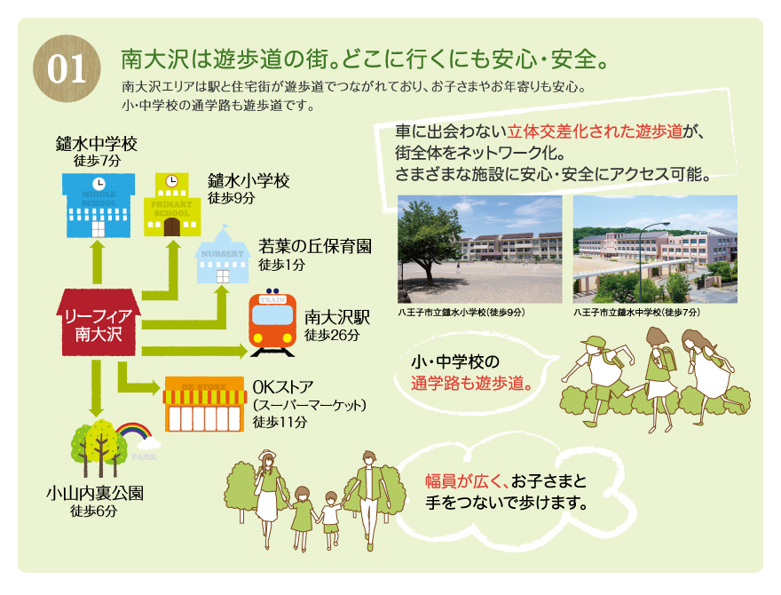
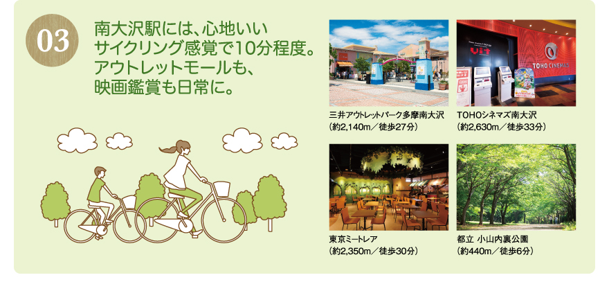
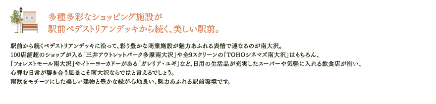
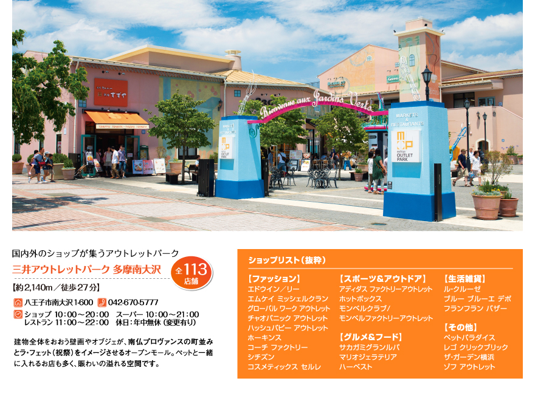
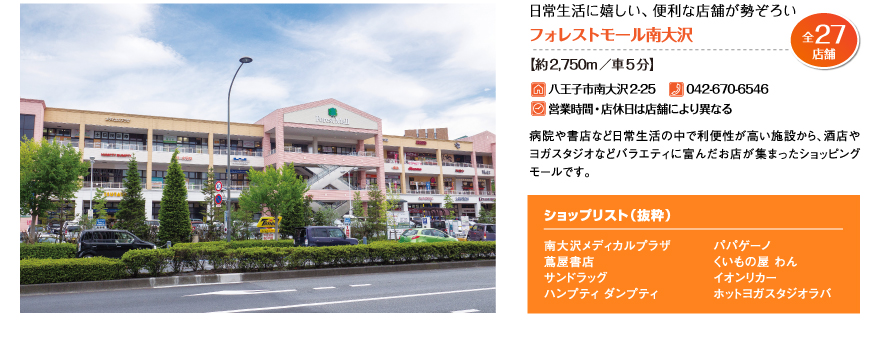
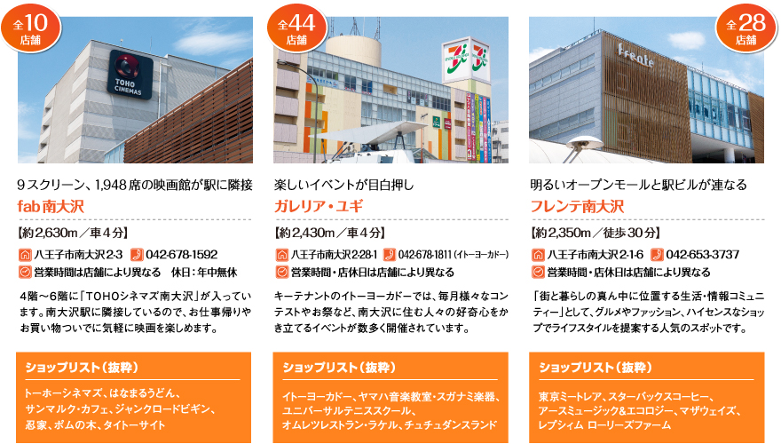
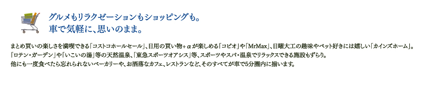
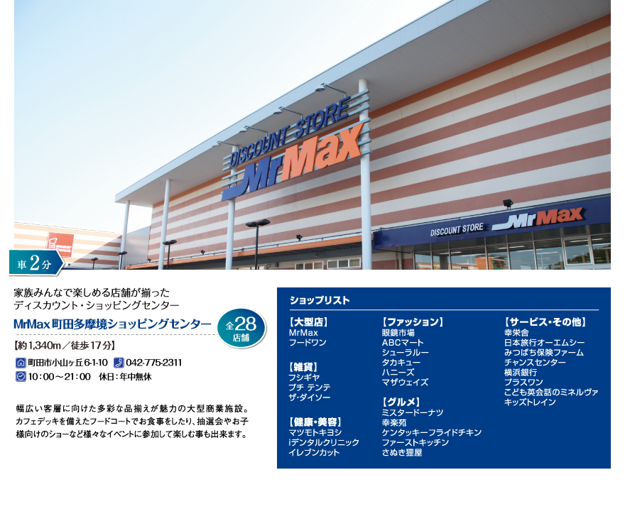
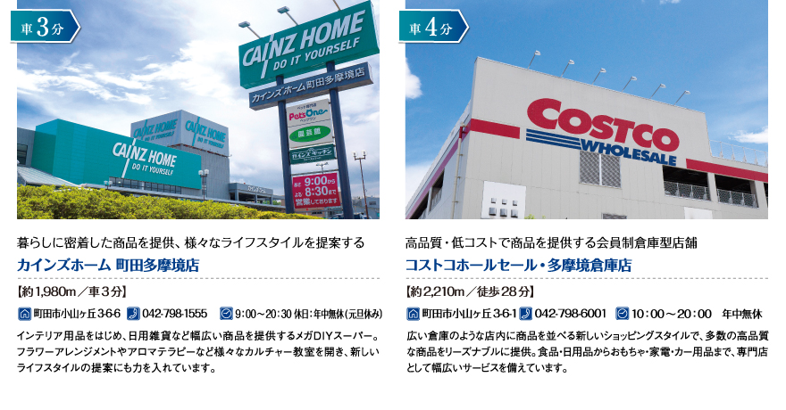
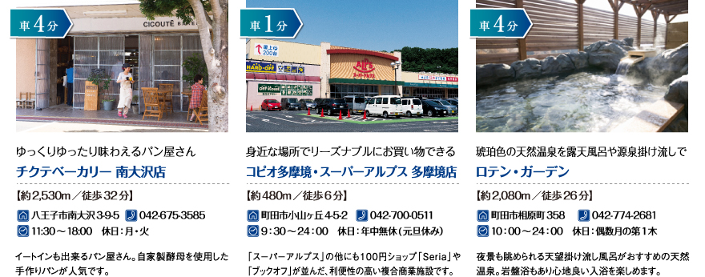
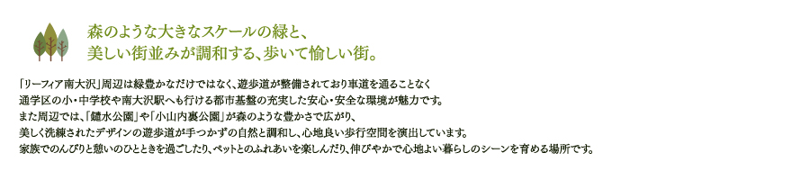
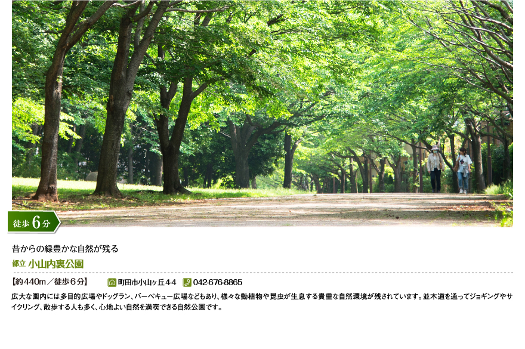
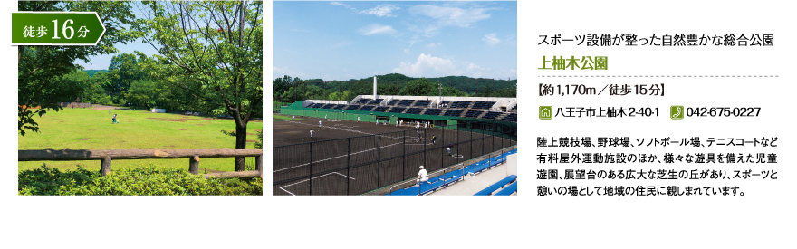
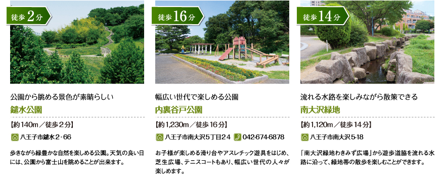
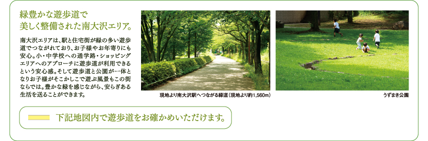
※掲載の環境写真は2013年3月、2013年5月・6月・7月に撮影したものです。※掲載の情報は2013年12月現在のものであり、将来変更される可能性があります。
※距離は現地からの概算です。徒歩は80mを1分、車は時速40km（端数切上げ）として計算しています。一般道の所要時間は道路事情により異なる場合があります。
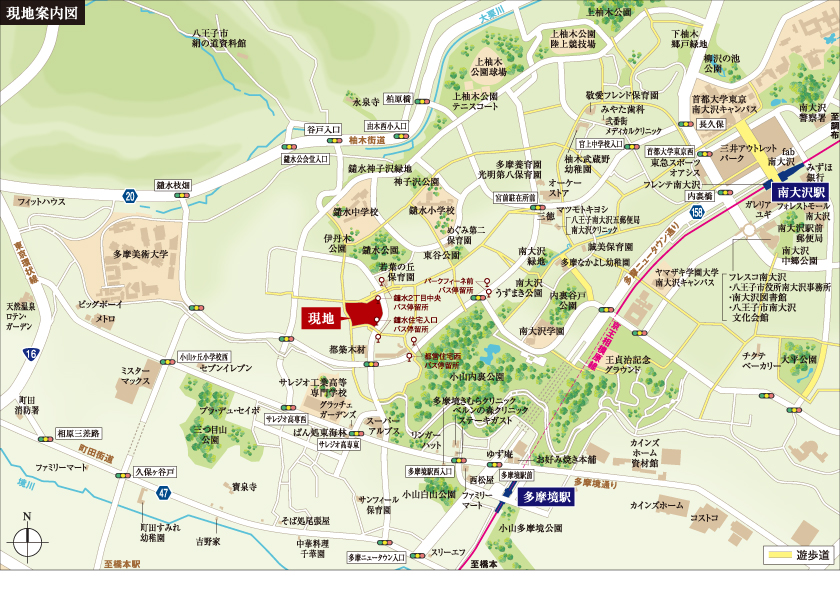
| 名称 | 距 離 | 分 数 |
|---|---|---|
| スーパーアルプス 多摩境店 | 約480m | 徒歩6分 |
| 三徳 南大沢店 | 約880m | 徒歩11分 |
| OKストア 南大沢店 | 約870m | 徒歩11分 |
| マツモトキヨシ 南大沢店 | 約930m | 徒歩12分 |
| フードワン 多摩境店 | 約1,340m | 徒歩17分 |
| MrMax 町田多摩境ショッピングセンター | 約1,340m | 徒歩17分 |
| ジェーソン 八王子上柚木店 | 約1,800m | 徒歩23分 |
| 三井アウトレットパーク 多摩南大沢 | 約2,140m | 徒歩27分 |
| コストコホールセール 多摩境倉庫店 | 約2,210m | 徒歩28分 |
| フレンテ 南大沢 | 約2,350m | 徒歩30分 |
| イトーヨーカドー 南大沢店 | 約2,430m | 車4分 |
| アリオ橋本 | 約2,840m | 車5分 |
| 名称 | 距 離 | 分 数 |
|---|---|---|
| 八王子市立鑓水小学校（通学指定校） | 約670m | 徒歩9分 |
| 八王子市立鑓水中学校（通学指定校） | 約560m | 徒歩7分 |
| めぐみ第二保育園 | 約460m | 徒歩6分 |
| サンフィール保育園 | 約960m | 徒歩12分 |
| 多摩なかよし幼稚園 | 約930m | 徒歩12分 |
| 小山白ゆり幼稚園 | 約1,740m | 徒歩22分 |
| 多摩美術大学 八王子キャンパス | 約1,460m | 徒歩19分 |
| 首都大学東京 南大沢キャンパス | 約2,430m | 徒歩31分 |
| 名称 | 距 離 | 分 数 |
|---|---|---|
| 松田歯科クリニック | 約1,010m | 徒歩13分 |
| 岡本歯科医院 | 約1,030m | 徒歩13分 |
| 多摩境きむらクリニック | 約1,040m | 徒歩13分 |
| こじま内科 | 約1,050m | 徒歩14分 |
| 南大沢クリニック | 約1,000m | 徒歩13分 |
| 小池歯科医院 | 約1,000m | 徒歩13分 |
| ベルンの森クリニック | 約1,180m | 徒歩15分 |
| 小山ケ丘歯科 | 約1,330m | 徒歩17分 |
| 弐番街メディカルクリニック | 約1,720m | 徒歩22分 |
| 泰生医院 | 約2,000m | 徒歩25分 |
| かしの木動物病院 | 約2,070m | 徒歩26分 |
| まつもと小児・アレルギークリニック | 約2,220m | 徒歩28分 |
| みなくち皮フ科医院 | 約2,220m | 徒歩28分 |
| かわだ眼科医院 | 約2,220m | 徒歩28分 |
| 名称 | 距 離 | 分 数 |
|---|---|---|
| 八王子南大沢五郵便局 | 約990m | 徒歩13分 |
| 東京法務局八王子支局 | 約2,410m | 車4分 |
| 八王子市役所南大沢事務所 | 約2,410m | 車4分 |
| 南大沢警察署 | 約2,570m | 車4分 |
| 八王子消防署由木分署 | 約3,490m | 車6分 |
| 八王子市役所 | 約9,650m | 車15分 |
| 名称 | 距 離 | 分 数 |
|---|---|---|
| みずほ銀行 南大沢支店 | 約2,630m | 車4分 |
| 八千代銀行 橋本支店 | 約2,530m | 車4分 |
| 三菱東京ＵＦＪ銀行 橋本支店 | 約2,560m | 車4分 |
| りそな銀行 橋本支店 | 約2,570m | 車4分 |
| 横浜銀行 橋本支店 | 約2,600m | 車4分 |
| 名称 | 距 離 | 分 数 |
|---|---|---|
| 永泉寺 | 約1,270m | 徒歩16分 |
| 八王子市絹の道資料館 | 約1,770m | 徒歩23分 |
| 八王子南大沢図書館 | 約2,410m | 車４分 |
| 南大沢文化会館 | 約2,410m | 車４分 |
| 生涯学習センター 南大沢分館 | 約2,410m | 車４分 |
| 南大沢市民センター | 約2,410m | 車４分 |
| 名称 | 距 離 | 分 数 |
|---|---|---|
| 鑓水公園 | 約140m | 徒歩2分 |
| 伊丹木公園 | 約280m | 徒歩4分 |
| 東谷公園 | 約380m | 徒歩5分 |
| 東京都立小山内裏公園 | 約440m | 徒歩6分 |
| 小山白山公園 | 約1,010m | 徒歩13分 |
| 南大沢緑地 | 約1,120m | 徒歩14分 |
| 三ッ目山公園 | 約1,170m | 徒歩15分 |
| 小山観音谷戸緑地 | 約1,190m | 徒歩15分 |
| 上柚木公園 | 約1,170m | 徒歩15分 |
| 内裏谷戸公園 | 約1,230m | 徒歩16分 |
| 小山多摩境公園 | 約1,440m | 徒歩18分 |
| 上柚木公園球場 | 約1,420m | 徒歩18分 |
| 王貞治記念グラウンド | 約1,680m | 徒歩21分 |
| 東急スポーツオアシス南大沢 | 約2,010m | 徒歩26分 |
| ユニバーサルテニススクール南大沢 | 約2,430m | 車4分 |
| 大平公園テニスコート | 約2,490m | 車4分 |
※距離は現地からの概算です。徒歩は80mを1分、車は時速40km（端数切上げ）として計算しています。